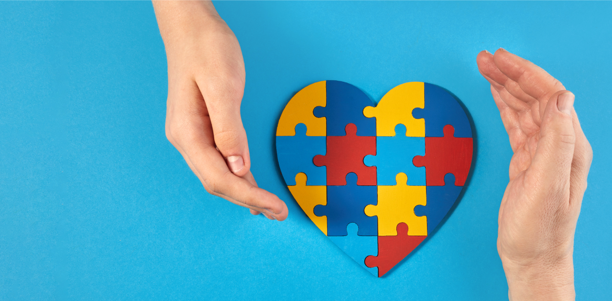
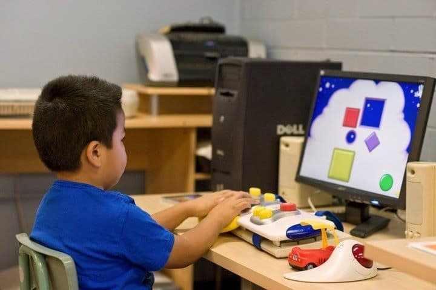

מהו הרצף האוטיסטי?
אוטיזם (ASD) הוא אינו באג במערכת, אלא שונות נוירולוגית והתפתחותית. המוח מפרש וקולט את העולם בצורה מעט שונה. שונות זו מתבטאת בדרכים ייחודיות בתקשורת חברתית, דפוסי חשיבה, ועיבוד חושי. מכיוון שכל אדם חווה זאת בעוצמות ובדרכים אחרות, אנו קוראים לזה "רצף".

הצורך בוויסות רגשי וחושי
עבור חלק מהאנשים על הרצף, העולם יכול להרגיש עמוס וחזק מדי. רגישות גבוהה לרעשים, אורות או עומס מידע דורשת מנגנונים של ויסות. האתגר היומיומי הוא למצוא או לייצר "אזורים בטוחים" המאפשרים הפחתת מתחים, מיקוד מחדש ורוגע בסביבה שלעתים מרגישה חסרת שליטה.
הזווית הטכנולוגית – מרחב בטוח
כאן הטכנולוגיה הופכת לגשר משמעותי. מעבר למערכות תקשורת תומכת (תת"ח) הנותנות קול למי שזקוק לו, טכנולוגיות ועיצוב ממשקים נכונים יכולים לייצר סביבות דיגיטליות בטוחות. כלים אלו מסייעים לילדים ובוגרים לתרגל כישורים חברתיים, לנהל שגרת יום צפויה, ולפתח עצמאות בקצב שלהם ובלי לחץ.
